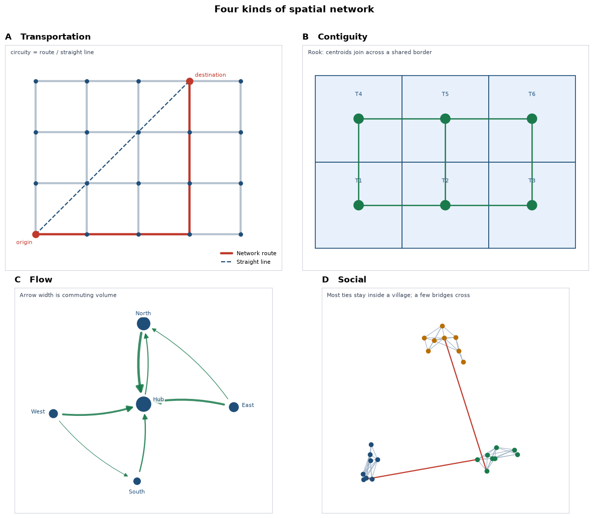

Code
# Display matplotlib figures inline in this Jupyter notebook.
%matplotlib inline
# Numeric and plotting stack for the four schematic panels.
import numpy as np # random village points and array arithmetic
import matplotlib.pyplot as plt # figure and axes for the 2x2 schematic
from matplotlib.patches import FancyArrowPatch, Rectangle, Circle # arrows, tracts, nodes
# Fixed seed so the social-panel village scatter is reproducible.
rng = np.random.default_rng(7) # reproducible random generator
# ===================================================================
# Draw a 2x2 schematic of the four spatial network types used in this
# chapter: transportation, contiguity, flow, and social embedding.
# ===================================================================
# Create a 2x2 grid of axes for the four network-type panels.
fig, axes = plt.subplots(2, 2, figsize=(12.2, 10.2)) # create a grid of subplot axes
def style(ax, title):
"""Apply a shared title, hide ticks, and lighten spines for schematic panels."""
ax.set_title(title, loc="left", fontweight="bold", fontsize=12, pad=8) # left-aligned panel title
ax.set_xticks([]) # hide x tick labels on schematic axes
ax.set_yticks([]) # hide y tick labels on schematic axes
for spine in ax.spines.values(): # iterate over the collection
spine.set_color("#d0d5dd") # soft grey frame around each panel
ax.set_aspect("equal") # keep street / tract geometry undistorted
# --- A. Transportation: street grid, route, and straight line -------------
ax = axes[0, 0] # top-left panel
cols, rows = np.arange(5), np.arange(4) # 5 vertical and 4 horizontal grid lines
# Draw horizontal street segments across each row.
for y in rows: # iterate over the collection
ax.plot([cols[0], cols[-1]], [y, y], color="#b7c3d0", lw=3, zorder=1, solid_capstyle="round") # draw lines or edges on the axes
# Draw vertical street segments across each column.
for x in cols: # iterate over the collection
ax.plot([x, x], [rows[0], rows[-1]], color="#b7c3d0", lw=3, zorder=1, solid_capstyle="round") # draw lines or edges on the axes
# Network route that follows the grid from origin to destination.
route = [(0, 0), (1, 0), (2, 0), (3, 0), (3, 1), (3, 2), (3, 3)] # ordered route vertices for the schematic
rx, ry = zip(*route) # unzip route vertices into x and y sequences
ax.plot(rx, ry, color="#c0392b", lw=3.2, zorder=2, solid_capstyle="round", label="Network route") # draw lines or edges on the axes
# Straight-line chord used in the circuity ratio (network / Euclidean).
ax.plot([0, 3], [0, 3], color="#1f4e79", lw=1.6, ls="--", zorder=2, label="Straight line") # draw lines or edges on the axes
# Scatter all grid junctions as small nodes.
ax.scatter(cols.repeat(len(rows)), np.tile(rows, len(cols)), s=28, c="#1f4e79", zorder=3) # plot point markers
# Highlight origin and destination nodes.
ax.scatter([0, 3], [0, 3], s=90, c="#c0392b", zorder=4) # plot point markers
ax.annotate("origin", (0, 0), textcoords="offset points", xytext=(-28, -14), fontsize=8, color="#c0392b") # label a feature near its coordinates
ax.annotate("destination", (3, 3), textcoords="offset points", xytext=(8, 6), fontsize=8, color="#c0392b") # label a feature near its coordinates
# Caption explaining the circuity definition shown in the panel.
ax.text(0.02, 0.98, "circuity = route / straight line", transform=ax.transAxes, # caption or note in axes / figure coordinates
va="top", fontsize=8, color="#344054") # vertical alignment
ax.legend(frameon=False, fontsize=8, loc="lower right") # route vs straight-line legend
ax.set_xlim(-0.6, 4.8) # pad around the street grid
ax.set_ylim(-0.7, 3.7) # pad or zoom the y extent
style(ax, "A Transportation") # apply shared schematic panel styling
# --- B. Contiguity: tracts and shared borders -----------------------------
ax = axes[0, 1] # top-right panel
nrow, ncol = 2, 3 # 2x3 tract grid
# Draw tract polygons and label each cell.
for i in range(nrow): # loop over an integer range
for j in range(ncol): # loop over an integer range
ax.add_patch(Rectangle((j, i), 1, 1, facecolor="#e8f1fb", edgecolor="#1f4e79", lw=1.2)) # add a shape / arrow patch to the axes
ax.text(j + 0.5, i + 0.78, f"T{i * ncol + j + 1}", ha="center", va="center", fontsize=8, color="#1f4e79") # caption or note in axes / figure coordinates
def centroid(i, j):
"""Return the centroid (x, y) of tract cell (row i, column j)."""
return j + 0.5, i + 0.5 # return the computed result
# Rook neighbours: draw an edge only when two tracts share a full border.
for i in range(nrow): # loop over an integer range
for j in range(ncol): # loop over an integer range
for di, dj in ((0, 1), (1, 0)): # right neighbour and upper neighbour
ni, nj = i + di, j + dj # notebook step
if ni < nrow and nj < ncol: # conditional branch
x0, y0 = centroid(i, j) # run this analysis or plotting step
x1, y1 = centroid(ni, nj) # run this analysis or plotting step
ax.plot([x0, x1], [y0, y1], color="#1a7a4c", lw=1.8, zorder=2) # draw lines or edges on the axes
# Plot tract centroids as graph nodes.
for i in range(nrow): # loop over an integer range
for j in range(ncol): # loop over an integer range
ax.add_patch(Circle(centroid(i, j), 0.06, facecolor="#1a7a4c", edgecolor="none", zorder=3)) # add a shape / arrow patch to the axes
ax.text(0.02, 0.98, "Rook: centroids join across a shared border", transform=ax.transAxes, # caption or note in axes / figure coordinates
va="top", fontsize=8, color="#344054") # vertical alignment
ax.set_xlim(-0.15, 3.15) # pad or zoom the x extent
ax.set_ylim(-0.25, 2.35) # pad or zoom the y extent
style(ax, "B Contiguity") # apply shared schematic panel styling
# --- C. Flow: commuting arrows --------------------------------------------
ax = axes[1, 0] # bottom-left panel
# Town locations (x, y) and marker size proxy (population).
towns = { # schematic town locations and sizes
"North": (1.6, 2.6, 42), # continue multi-line call
"West": (0.2, 1.2, 18), # continue multi-line call
"East": (3.0, 1.3, 22), # continue multi-line call
"South": (1.5, 0.15, 12), # continue multi-line call
"Hub": (1.6, 1.35, 55), # continue multi-line call
}
# Directed commuting volumes (origin, destination, volume).
flows = [ # town in-/out-/net-flow balance table
("West", "Hub", 8), # continue multi-line call
("East", "Hub", 9), # continue multi-line call
("South", "Hub", 5), # continue multi-line call
("North", "Hub", 11), # continue multi-line call
("Hub", "North", 4), # continue multi-line call
("West", "South", 1.5), # continue multi-line call
("East", "North", 2), # continue multi-line call
]
# Draw each OD flow as an arrow whose width scales with volume.
for a, b, vol in flows: # iterate over the collection
x0, y0, _ = towns[a] # notebook step
x1, y1, _ = towns[b] # notebook step
ax.add_patch(FancyArrowPatch( # add a shape / arrow patch to the axes
(x0, y0), (x1, y1), # origin and destination coordinates
arrowstyle="-|>", # filled arrow head
mutation_scale=10 + vol, # head size grows with volume
lw=0.4 + 0.28 * vol, # stroke width proportional to volume
color="#1a7a4c", # artist colour
alpha=0.85, # regularisation strength (0 = unpenalised PPML)
connectionstyle="arc3,rad=0.12", # slight curve so overlapping OD pairs separate
shrinkA=14, shrinkB=14, # keep arrow tips clear of town markers
))
# Offset each town label so it does not cover the marker.
label_at = { # label offsets so text clears markers
"North": (0, 14, "center"), # continue multi-line call
"West": (-12, 2, "right"), # continue multi-line call
"East": (12, 2, "left"), # continue multi-line call
"South": (0, -16, "center"), # continue multi-line call
"Hub": (14, 6, "left"), # continue multi-line call
}
for name, (x, y, pop) in towns.items(): # iterate key/value pairs
ax.scatter([x], [y], s=8 * pop, c="#1f4e79", zorder=3) # marker area scales with population
dx, dy, ha = label_at[name] # notebook step
ax.annotate(name, (x, y), textcoords="offset points", xytext=(dx, dy), # label a feature near its coordinates
ha=ha, va="center", fontsize=8, color="#1f4e79", # horizontal alignment
bbox=dict(boxstyle="round,pad=0.15", fc="white", ec="none", alpha=0.85)) # bbox argument
ax.text(0.02, 0.98, "Arrow width is commuting volume", transform=ax.transAxes, # caption or note in axes / figure coordinates
va="top", fontsize=8, color="#344054") # vertical alignment
ax.set_xlim(-0.4, 3.6) # pad or zoom the x extent
ax.set_ylim(-0.35, 3.15) # pad or zoom the y extent
style(ax, "C Flow") # apply shared schematic panel styling
# --- D. Social: villages, local ties, bridges -----------------------------
ax = axes[1, 1] # bottom-right panel
centers = np.array([[0.0, 0.0], [2.7, 0.25], [1.35, 2.35]]) # three village centres
village_color = ["#1f4e79", "#1a7a4c", "#b86e00"] # one colour per village
points = [] # will hold the farmer point clouds
# Scatter farmers around each village and link nearby pairs (local ties).
for c, col in zip(centers, village_color): # iterate paired sequences together
pts = c + rng.normal(scale=0.28, size=(8, 2)) # 8 farmers per village
points.append(pts) # append this record
for i in range(len(pts)): # loop over an integer range
for j in range(i + 1, len(pts)): # loop over an integer range
if np.hypot(*(pts[i] - pts[j])) < 0.55: # link only close farmers
ax.plot([pts[i, 0], pts[j, 0]], [pts[i, 1], pts[j, 1]], # draw lines or edges on the axes
color="#9bb0c3", lw=0.8, zorder=1) # artist colour
# Two between-village bridges that let practices leave a village.
bridges = [(points[0][2], points[1][5]), (points[1][1], points[2][4])] # between-village bridge endpoints
for p, q in bridges: # iterate over the collection
ax.plot([p[0], q[0]], [p[1], q[1]], color="#c0392b", lw=1.6, zorder=2) # draw lines or edges on the axes
# Plot farmers coloured by village membership.
for pts, col in zip(points, village_color): # iterate paired sequences together
ax.scatter(pts[:, 0], pts[:, 1], s=36, c=col, zorder=3) # plot point markers
ax.text(0.02, 0.98, "Most ties stay inside a village; a few bridges cross", # caption or note in axes / figure coordinates
transform=ax.transAxes, va="top", fontsize=8, color="#344054") # coordinate transform for text placement
ax.set_xlim(-0.9, 3.7) # pad or zoom the x extent
ax.set_ylim(-0.9, 3.3) # pad or zoom the y extent
style(ax, "D Social") # apply shared schematic panel styling
# Shared figure title and tight layout before display.
fig.suptitle("Four kinds of spatial network", fontsize=14, fontweight="bold", y=1.01) # shared figure title above all panels
fig.tight_layout() # reduce wasted whitespace between panels
plt.show() # render the schematic in the notebook
